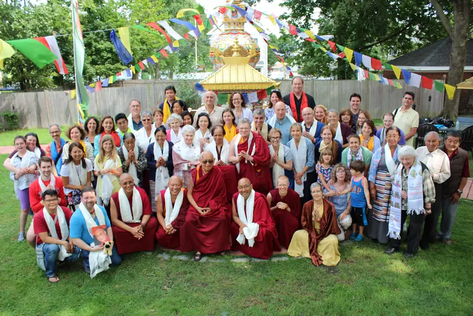
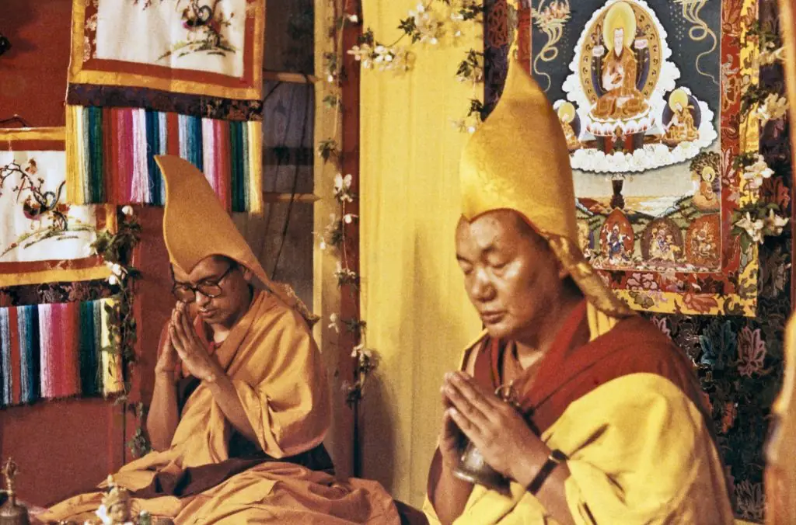
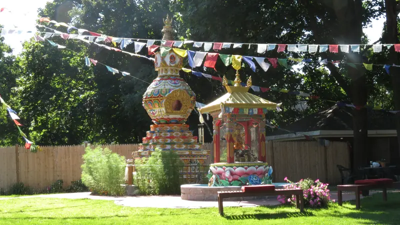

A home for the Dharma in Medford since 1989
Kurukulla Center is a community for studying and practising Tibetan Buddhism in the tradition of Lama Tsongkhapa. Everyone is welcome, in person or online.

A community of support for study and practice
Kurukulla Center was founded in 1989 under the spiritual direction of Lama Zopa Rinpoche and the Foundation for the Preservation of the Mahayana Tradition. Under the guidance of our resident teacher, Geshe Ngawang Tenley, our mission is to provide a community of support for those who are studying and practising the Tibetan Buddhist tradition.
Teachings began at the offices of Wisdom Publications on Newbury Street. In 2002 the center moved into its own home on Magoun Avenue, and in 2010 the Kalachakra Stupa for World Peace was completed in the garden. Kurukulla is run entirely by volunteers.
- Founded
- 1989
- Resident teacher since
- 2010
- Stupa completed
- 2010

This week at Kurukulla
Teachings with Geshe Tenley on Sunday mornings and Wednesday evenings, practice through the week, and pujas on the days of the Tibetan calendar. Most of it can be joined in person or on Zoom.
Study and practice, at every stage
Classes are open to everyone, whatever your background. If you are not sure where to start, write to program@kurukulla.org and we will suggest a course.

-
Saturdays, 3 to 5 PM · Online
Introduction to Buddhism
“Your Life, Your Mind, Your Choice” with Seán González. Each module runs for five Saturdays; drop in for one, some or all. Module 4, The Dharma and AI, begins 7 November.
-
FPMT foundation course
Discovering Buddhism
Fourteen mini-courses on specific topics, for newer students and anyone who wants to bring study and practice together.
-
Sundays 10 AM · Wednesdays 7 PM · In person & online
Main program with Geshe Tenley
Chapter 8 of Shantideva's Guide to the Bodhisattva's Way of Life on Sundays, and The Wheel of Sharp Weapons, a lojong text, on Wednesdays.
-
By the Tibetan calendar
Pujas and holy days
Tara on the 8th, Lama Chopa on the 10th and 25th, Medicine Buddha on the 15th, and the great Buddha days. Next: Lhabab Duchen on 1 November.
-
Tuesdays, 7 PM · Free
Yoga & Meditation
A mixed-level class with Canan Ayar, ending with twenty minutes of guided meditation. No experience needed.

We follow the tradition of Lama Tsongkhapa, the tradition of His Holiness the Dalai Lama, Lama Yeshe and Kyabje Zopa Rinpoche.

Resident teacher
Venerable Geshe Ngawang Tenley
Geshe Tenley was ordained in 1990 and studied for the geshe degree at Sera Jey Monastic University, receiving teachings from His Holiness the Dalai Lama and many other highly qualified masters. He took full ordination from His Holiness in 1998 and completed his geshe degree in 2008.
He began teaching at Kurukulla in 2009 and, on the advice of Lama Zopa Rinpoche, was appointed resident teacher in 2010, following his uncle, the beloved Geshe Tsulga. He is known for his approachability and kindheartedness.

Also teaching: Thubten Damchoe, our translator · Seán González · Canan Ayar
The yellow house on Magoun Avenue
Kurukulla Center68 Magoun Avenue
Medford, MA 02155
(617) 624-0177
info@kurukulla.org
By car
I-93 to exit 32, then Route 60 (Salem Street) east to Park Street. Right on Park, left on Magoun Avenue: a big yellow house on the left. Park in the driveway if there is space.
By T and bus
Orange Line to Wellington, then the 134 bus to Pembroke and Riverside, and walk two blocks. Or a 10 to 15 minute walk from Medford Square (buses 94, 95, 96).
From Logan airport
Blue Line to State, then the Orange Line outbound to Wellington. A taxi takes about 20 minutes without traffic.

Kept alive by generosity
Kurukulla is an all-volunteer center. Your support sustains Geshe Tenley and our translator Damchoe, keeps the house open, and lets us host visiting teachers for everyone in the Boston area. Running the center costs between $8,000 and $9,000 a month.
Kurukulla Center is a 501(c)(3) nonprofit. Contributions are tax-deductible to the extent allowed by law, and many employers match them.
Membership
All members receive Mandala, the FPMT magazine.

- Monk sponsorshipSupport the education of monks.
- Building fundCare for the house and the stupa garden.
- VolunteerOffer your time and skills: write to info@kurukulla.org.